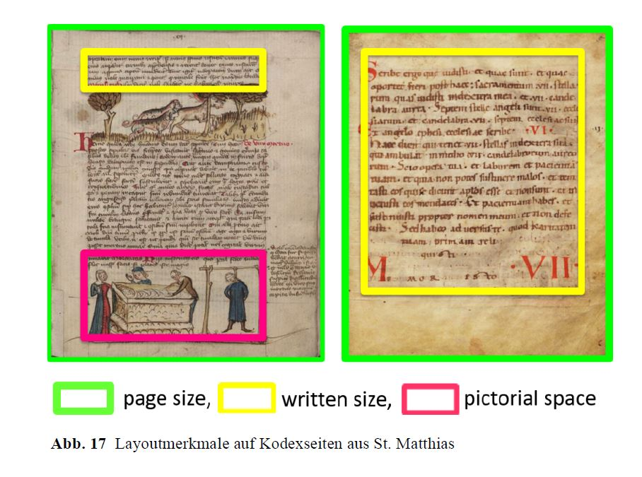
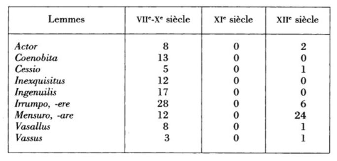
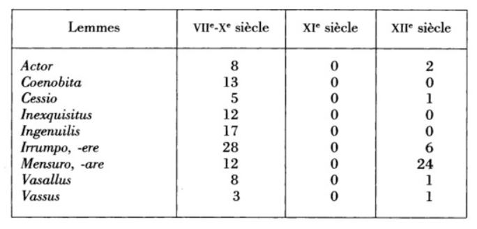
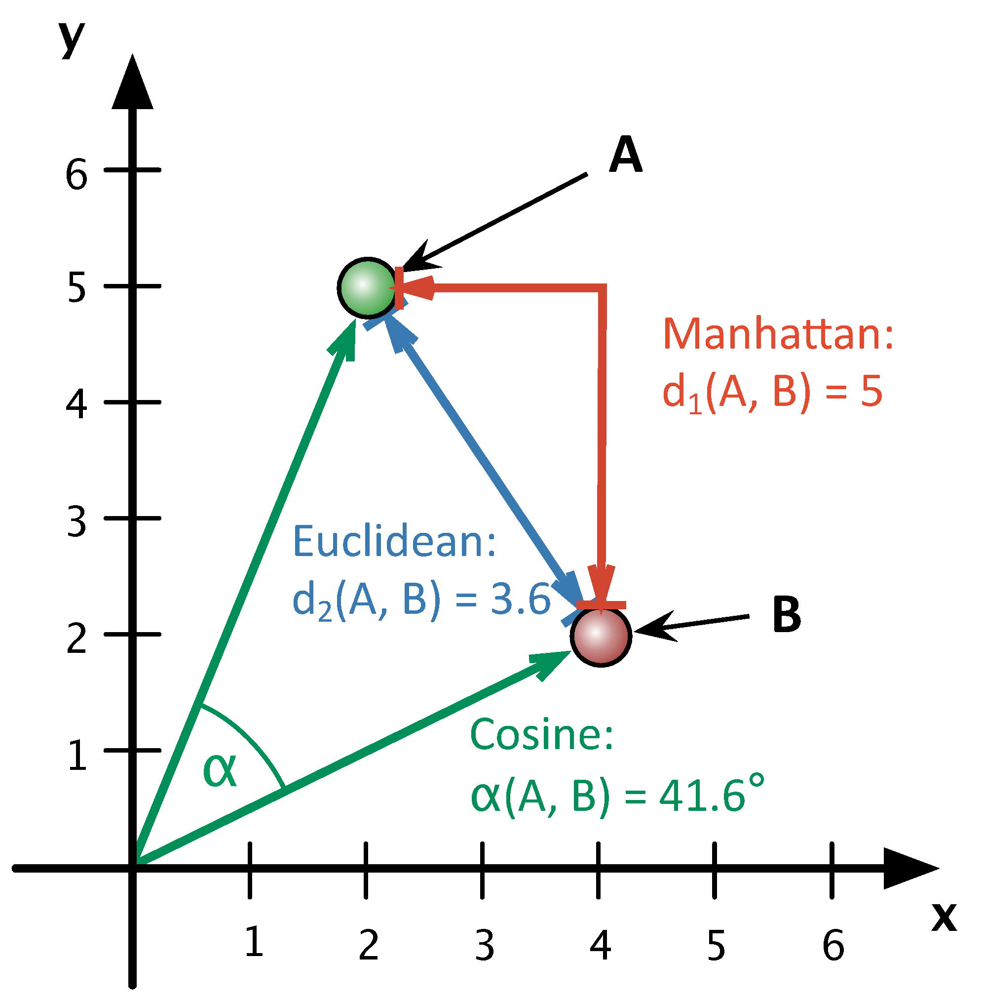
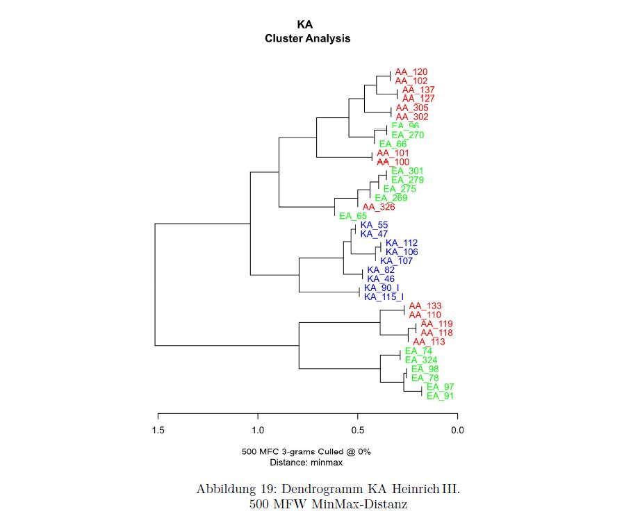
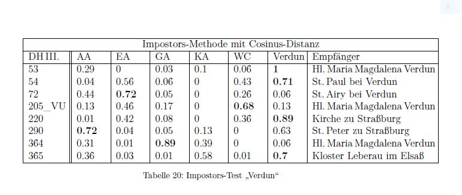
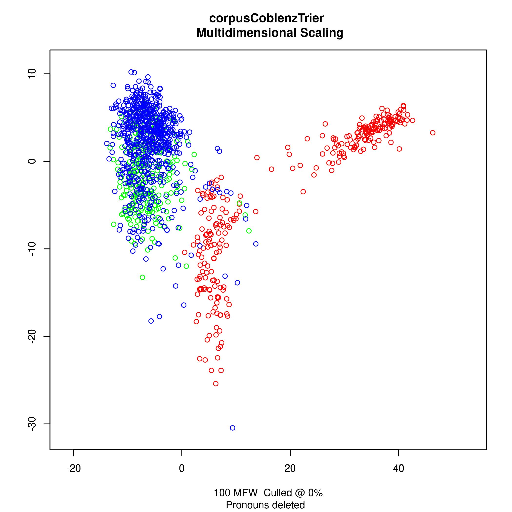

Die Historischen Grundwissenschaften zwischen Materialität und Digitalität
8. Jahrestagung des Netzwerks Historische Grundwissenschaften
Distant Diplomatics
Problemfelder und Chancen
Pia Geißel, MScWas ist das "Distant" in "Distant Diplomatics"?
- Distant Reading (Moretti, 2000)
- Distant Diplomatics: weit über das "Materialangebot" einer Urkundenedition hinausgehend
- quantitative Analyse
Beispiele quantitativer Analysen
Quantitative Kodikologie (Ornato, 1997)  eCodicology-Projekt: https://de.dariah.eu/documents/20142/79829/eCodicology_Kap7.pdf/f5bbde10-cfbf-477d-8ad8-152155b69a28Beispiele quantitativer Analysen
Les mutations du vocabulaire latin des chartes au XIe siècle (Tock, 1997 p. 124f.) 

Beispiele quantitativer Analysen
Stylometry and the Complex Authorship in Hildegard of Bingen’s Oeuvre (Kestemont et al., 2015)
Beispiele quantitativer Analysen - Problemfelder
- proof of concept?
- Qualität der Untersuchungsgegenstände?
- Umgang/Einordnung der Quellen?
- Akzeptanz in der Community?
Editionen für quantitative Analysen?
Eine KriterienlisteEditionen für quantitative Analysen?
- Auchzeichnungssprace z.B. TEI-XML/CEI-XML
- Nachnutzbarkeit
- kein oder sehr weit gefasstes Sammlungskonzept
- frei zugänglich
Editionen für quantitative Analysen?
CLXI.
1357, 4. Çebntar. — Srjbifdjof (Seriad) Bon SKainj begtnubint uiib tranfumiert
einen Söefe^t bee ^apfte« Snnoceiij VI. »om Saf)ve 1356, roorin bevjelbe bem ¡Bimsen-
Гчфеп sBiidjofe anftvägt, bie alienirten ©üter beS Ätofters 3Rerb,oIj rcieber beigäitgig
¡u madjen.
99999999
....
In cuius quidem visionis, lecture et transscripeionis testi monio sigillum nostrum
presentibus est appensum.
Datum Elteuil ij Nonas Febr. Anno domini M'. CCC. L". séptimo.
®a$ ctjbifd)öflid)e Siegel ift om untern SRanbc ftarf befdjäbigt.
2lu« bem Originate im SUd)i»e ju S3iibiiigen.
>j'»íL¡
Editionen für quantitative Analysen?
Beispiel: monasterium.net- OCR-Fehler
- automatisch generierte (fehlerhafte) Metadaten
- keine saubere Trennung zwischen Urkundentext, Regest, Anmerkungsapparat
- -> das Layout der Seite wurde ausgezeichnet, nicht aber die Semantik der Urkunde
- keine Auszeichnung der Urkundenabschnitte
- Worttrennungen werden nicht berücksichtigt
Editionen für quantitative Analysen?
Umgang mit Abkürzungen im Urkundenkontext?
Umgang mit Abkürzungen im Urkundenkontext?
Editionen für quantitative Analysen?
MGH D F I 220
...
In nomine sancte et individue trinitatis. Fredericus) divina favente clementia
Romanorum imperator et semper augustus.
Ad imperialem spectat dignitatem non
solum predecessorum nostrorum catholicorum
imperatorum pia statuta inviolabiliter
conservare, verum etiam nostre quoque
potestatis auctoritate irrefragabiliter ea munire.
Inde est, quod omnibus Christi et imperii
fidelibus tam futuris) quam presentibus
notum esse volumus, qualiter nobis consedentibus)
super lacum iuxta Veronam homi-
nes
liberos habitantes in insula Sermie laci Benaci Malanotum de Bardolino, Varinum
Editionen für quantitative Analysen?
Stand der Dinge
- digitale Urkundentexte beruhen (meist) auf analogen Urkundeneditionen
- dadurch werden auch Layoutmerkmale ausgezeichnet, die aber für eine quantitative Analyse unwichtig ist
- je weiter das Sammlungskonzept gefasst ist, umso schwieriger wird es, eine einheitliche Auszeichnung der Originaltexte zu gewährleisten
- um eine nachnutzbare, digitale Urkundensammlung zu erstellen ist eine redaktionelle Nach- oder Vorbearbeitung unumgänglich?
Editionen für quantitative Analysen?
nice to have
- Named Entity Recognition?
- Auszeichnung der Textabschnitte?
- Einheitlichkeit der Formatierung?
- graphem. Ausprägungen einbeziehen oder ausklammern?
- mehrere 'Versionen' vergleichend einbeziehen?
Distant Diplomatics aus der Praxis - Computergestütze stilometrische Urkundenanalysen
Autorschaftsattribution in Urkunden
Wer ist der Verfasser einer Urkunde?
- Autorität?
- Vorlage?
- Schreiber?
- Diktator?
Autorschaftsattribution in Urkunden
- unbekannte Einflüsse von Vorurkunden?
- Überlieferungsgeschichte eines Schriftstücks?
- Kopiale?
Autorschaftsattribution in Urkunden
- orthographischer Einfluss des Schreibers?
- Formelhafte Sprache der Urkunden
- ab wann sind Textmengen ausreichend, um verlässliche Ergebnisse zu liefern?
Autorschaftsattribution in Urkunden
Exkurs: Wie wird 'Stil' gemessen?
- Texte werden als 'Bag of words' interpretiert
- Die Featurehäufigkeiten werden als Vector in einem mehrdimensionalen Raum dargestellt
Autorschaftsattribution in Urkunden
Exkurs: Wie wird 'Stil' gemessen?
 Die Distanz beliebig vieler Vektorpaare wird mit Distanzmaßen gemessenAutorschaftsattribution in Urkunden
Exkurs: Wie wird 'Stil' gemessen?
Autorschaftsattribution in Urkunden
Exkurs: Wie wird 'Stil' gemessen?
Autorschaftsattribution in Urkunden
Exkurs: Wie wird 'Stil' gemessen?
Autorschaftsattribution in Urkunden??!?
- Zeigen Tendenzen auf
- Können Ergänzungen sein zu bestehenden Forschungen
- Können Bestätigungen sein zu gestellten Thesen
- Es fehlt bisher eine Meta-Studie zur Anwendung stilistischer Methoden!